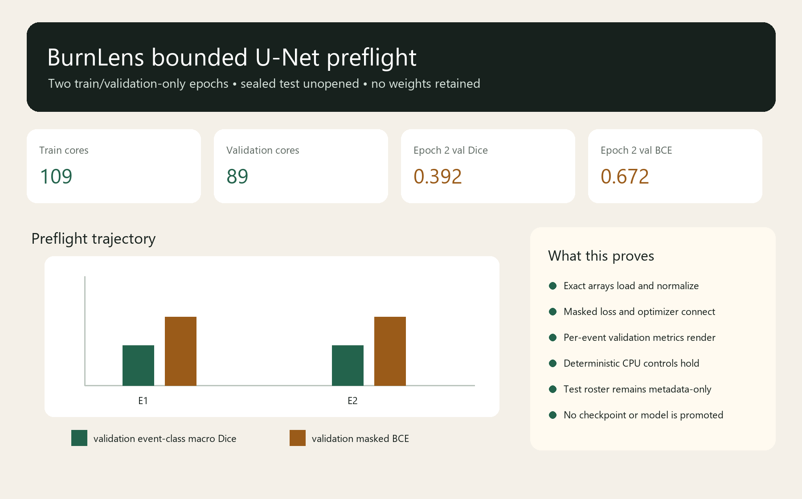

P3O1-T01-U03 • protocol preflight
One model path, still before training
Two deterministic train/validation-only epochs prove that the frozen data, model, loss, optimizer, metrics, and renderer connect. Ward Creek and Windigo test arrays remain unopened.
Boundary
- Two-epoch train/validation connectivity smoke only; not the substantive U04 training run.
- No preflight weights or checkpoint may be used as the model candidate.
- Owner-approved prototype labels are not independent ground truth or field validation.
- The frozen RBR baseline remains at the selected-core metric ceiling.
Rendered preflight evidence

Exact two-epoch history
| Epoch | Train BCE | Validation BCE | Event-class macro Dice | Event-class macro IoU | Worst-event macro Dice |
|---|---|---|---|---|---|
| 1 | 0.702446043 | 0.672325308 | 0.392018779 | 0.330128205 | 0.333333333 |
| 2 | 0.699159265 | 0.671666085 | 0.392018779 | 0.330128205 | 0.333333333 |
Lineage
- Run
BL-2026-07-25-p3o1-t01-u03-preflight-r001- Source commit
fbb2e923ae7f9ca9ed7dbb317e4235a236ae2411- Protocol SHA-256
e2a0146ebcef4102b246f7a2117e09d21f441354eda0ceb4df764bbaebe940a6- Disposition
pass-preflight-not-model